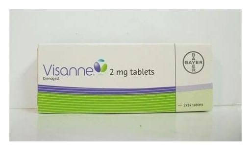

Visanne 2 mg Tablet, 28 Adet

Ne için kullanılır
KT · Bölüm 1 VISANNE ambalajında beyaz ila beyazımsı renkte, yuvarlak, yüzeyleri düz, konik kenarlı, “B” harfi ile işaretlenmiş 28 adet tablet bulunur. Her bir tablet 2 mg dienogest etkin maddesi içerir. VISANNE laktoz monohidrat (sığır kaynaklı) içerir. VISANNE bir hormon ilacıdır. Etkin maddesi olan dienogest, progesteron adı verilen bir ilaç grubuna aittir. VISANNE, endometriyozis adı verilen rahatsızlığın tedavisi için kullanılır. Endometriyozis, rahim iç tabakasının (endometriyum) rahim iç yüzeyi dışında bir yerde yerleşmesine verilen isimdir. Rahim iç tabakası, adet döngüsünün seyri içinde her ay kalınlaşır ve daha sonra adet kanaması mekanizmasıyla vücut dışına atılır. Rahim dışı bölgelerde bulunan endometriyum dokusu da aynı şekilde kalınlaşır, ancak kanama dönemlerinde vücut dışına atılamaz ve bulunduğu bölgede iltihap ve ağrıya yol açar.
VISANNE bu dokunun gelişmesini engeller ve endometriyozis hastalığında görülen, karnın alt tarafında leğen (kalça) bölgesindeki ağrıları ve ağrılı adet kanaması şikayetlerini azaltır.
Endometriyozis tedavisi uzun süreli bir tedavidir. VISANNE adet kanamasının başladığı dönem ile sona erdiği dönem (menopoz) arasında kullanılabilir.